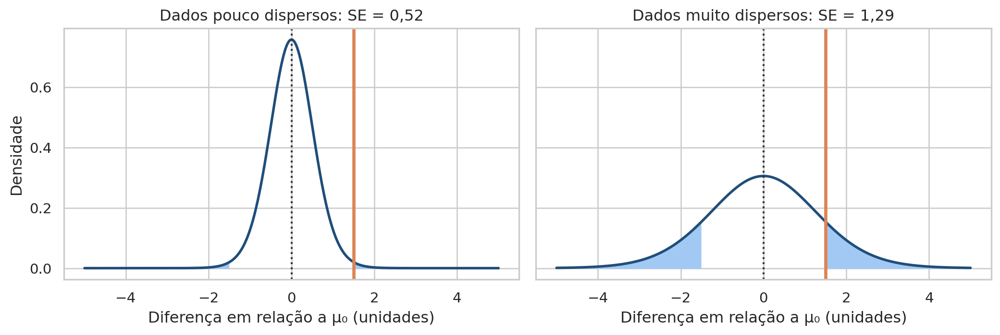
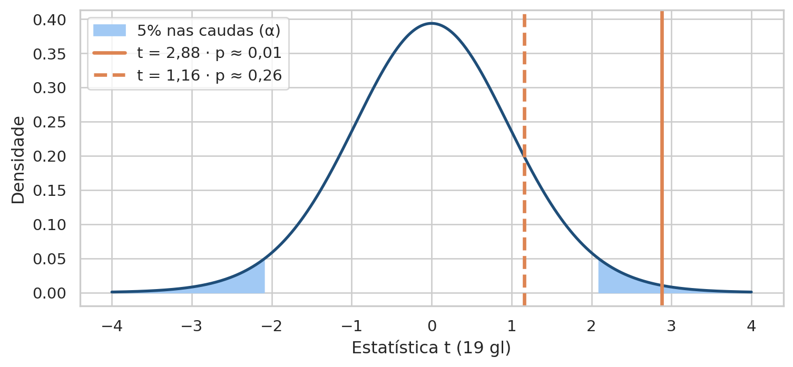
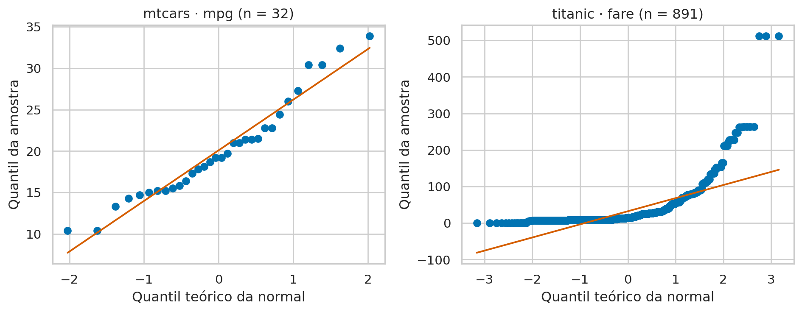
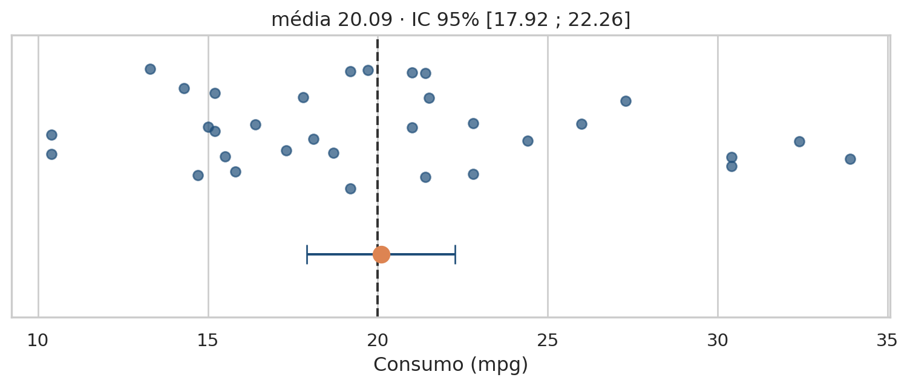
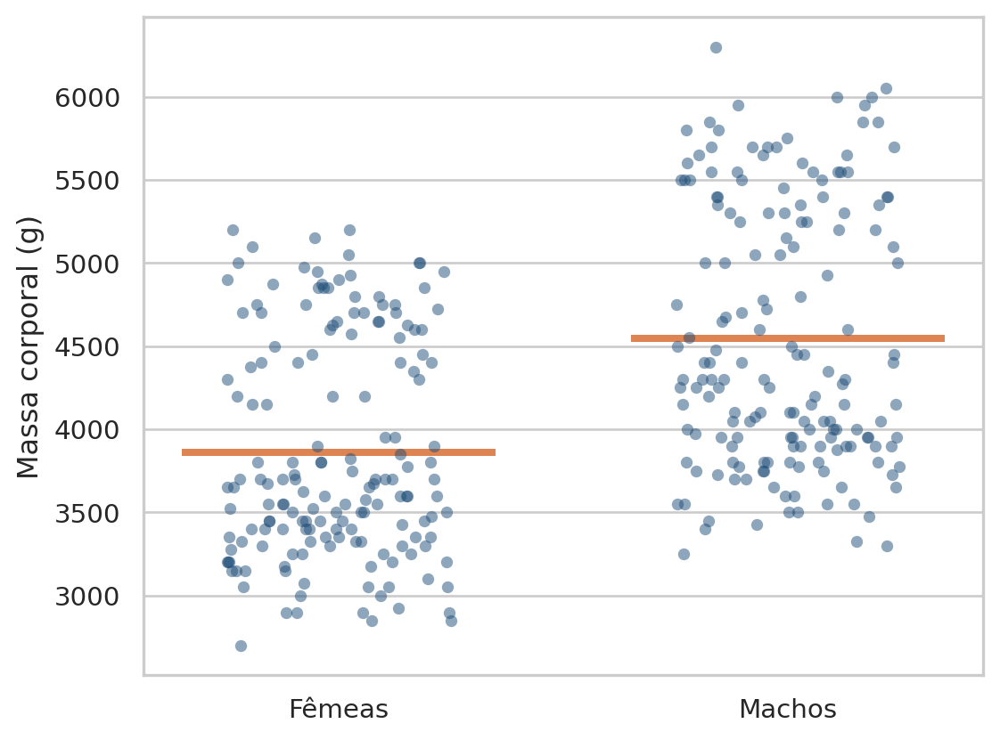
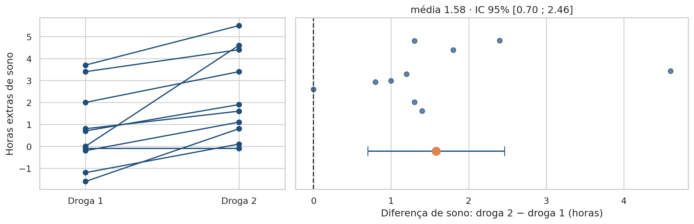
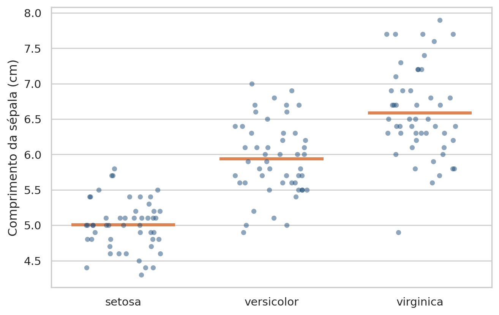
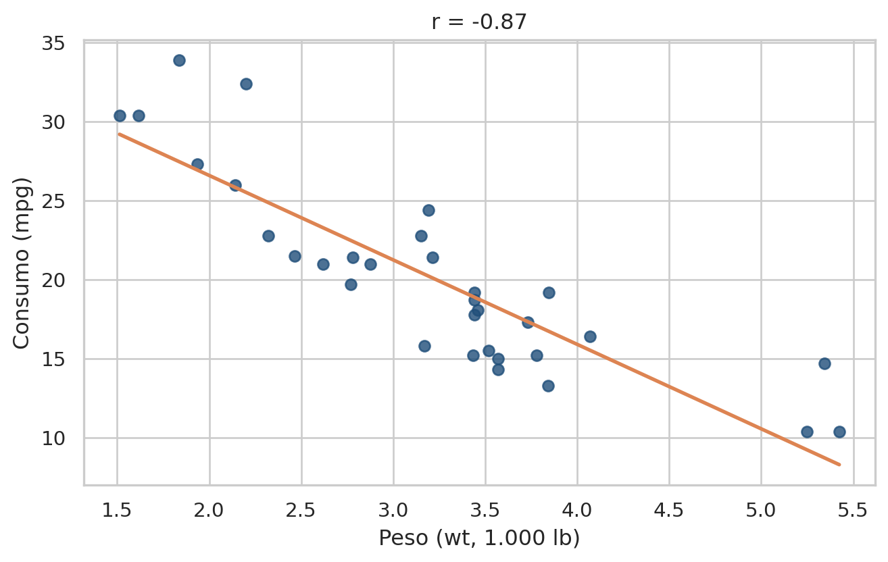
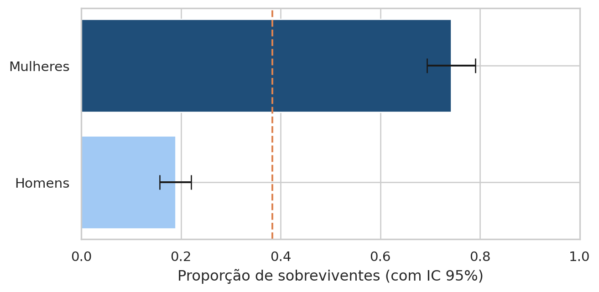
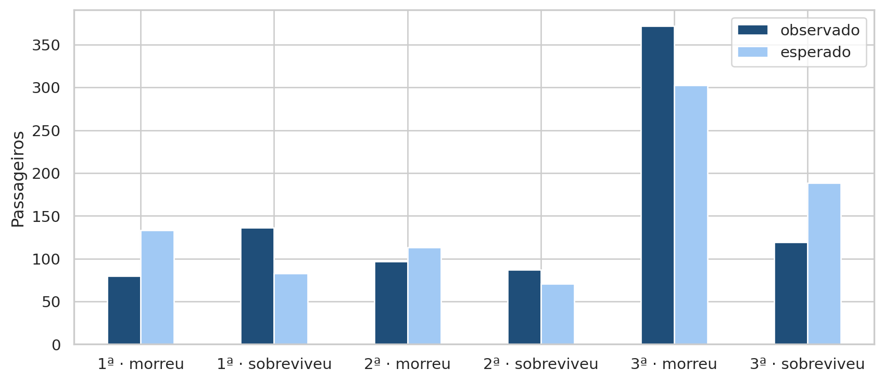

# Importa as bibliotecas e define o tema dos gráficos
import numpy as np
import pandas as pd
import matplotlib.pyplot as plt
import seaborn as sns
from scipy import stats
from statsmodels.stats.proportion import proportions_ztest, proportion_confint
sns.set_theme(style="whitegrid", palette="colorblind")Aula 8 - Testes Paramétricos
Motivação
Na Aula 7, construímos a distribuição nula de duas formas: embaralhando rótulos, no teste de permutação, e por fórmula, no teste t de Welch. Vimos também como ler o p-valor, como decidir com \(\alpha\) e quais erros essa decisão pode cometer. Nesta aula, partimos desse ponto e respondemos a duas perguntas novas. Quando a distribuição nula pode vir de uma fórmula? E, diante de dados de natureza diferente, qual fórmula usar?
Um teste paramétrico troca a simulação por uma curva teórica: t, F, Z ou \(\chi^2\). Essa troca só é segura quando os dados cumprem certas premissas. A escolha da curva, por sua vez, depende do que medimos e de como as observações foram coletadas. A primeira parte do roteiro trata dessas condições. A segunda aplica sete testes a sete problemas reais, cada um com seu próprio conjunto de dados.
Qual teste responde à minha pergunta, e posso confiar nele?
Objetivos de aprendizagem
Ao final deste roteiro, você será capaz de:
- Explicar o que torna um teste paramétrico e o que se ganha e se arrisca com ele.
- Verificar normalidade, homocedasticidade e independência com Q-Q plot, Shapiro-Wilk e o desenho do estudo.
- Escolher o teste pelo objetivo, pela escala da variável e pelo delineamento.
- Aplicar em Python os testes t de uma amostra, de Welch e pareado, a ANOVA, a correlação de Pearson, o teste Z de duas proporções e o \(\chi^2\) de independência.
- Interpretar os resultados e reconhecer quando migrar para um teste não paramétrico.
Como usar este roteiro
O roteiro usa cinco conjuntos de dados, cada um salvo em <nome>/data/:
| Base | Origem | Casos |
|---|---|---|
mtcars |
Revista Motor Trend, 1974 (já usada na Aula 7) | 1 e 5 |
penguins |
Pinguins do arquipélago Palmer, Antártida | 2 |
sleep |
Ensaio clínico com dois soníferos (Student, 1908) | 3 |
iris |
Flores de três espécies de íris (Fisher, 1936) | 4 |
titanic |
Passageiros do naufrágio do Titanic, 1912 | 2.3, 6 e 7 |
Além das bibliotecas da Aula 7, usamos o statsmodels no caso 6.
1. Preparando os dados
Começamos com as bibliotecas e as cinco bases. Cada caso usa apenas algumas colunas, apresentadas quando o caso começar.
# Carrega as cinco bases
mtcars = pd.read_csv("mtcars/data/mtcars.csv")
penguins = pd.read_csv("penguins/data/penguins.csv")
sleep = pd.read_csv("sleep/data/sleep.csv")
iris = pd.read_csv("iris/data/iris.csv")
titanic = pd.read_csv("titanic/data/titanic.csv")As cinco bases têm tamanhos bem diferentes, do ensaio clínico com 20 registros ao Titanic com quase 900 passageiros:
| Base | Linhas | Colunas | Cada linha representa |
|---|---|---|---|
mtcars |
32 | 12 | Um modelo de carro |
penguins |
344 | 8 | Um pinguim |
sleep |
20 | 3 | Um paciente com uma das duas drogas |
iris |
150 | 5 | Uma flor |
titanic |
891 | 15 | Um passageiro |
O tamanho da amostra influencia diretamente as decisões desta aula. Com 20 registros, a normalidade precisa ser verificada com cuidado. Com centenas, o teorema central do limite torna o teste t robusto, mas o Shapiro-Wilk passa a rejeitar desvios pequenos.
2. O que um teste paramétrico exige
2.1 A curva teórica e sua largura
Um teste paramétrico não simula a distribuição nula: ele supõe que os dados seguem uma família conhecida, como a normal, e lê o p-valor como uma área sob uma curva teórica. No caso de uma média, a estatística e a largura da curva são:
\[ t = \frac{\bar{x} - \mu_0}{SE} \qquad\qquad SE = \frac{s}{\sqrt{n}} \]
Aqui, \(\mu_0\) é o valor de referência sob \(H_0\). Sob \(H_0\), t segue a distribuição t de Student com \(n - 1\) graus de liberdade.
O erro-padrão decide se uma diferença é grande ou pequena. Considere a mesma diferença de 1,5 unidade em duas amostras de 20 observações, uma com dados pouco dispersos (\(SE = 0{,}52\)) e outra com dados muito dispersos (\(SE = 1{,}29\)). Na Figura 1, a diferença está na mesma posição nos dois painéis. O que muda é a largura da curva ao redor dela.

Dividindo a diferença pelo erro-padrão, os dois cenários vão para a mesma régua (Figura 2). O primeiro dá \(t = 2{,}88\) e cai na região de rejeição (\(p \approx 0{,}01\)). O segundo dá \(t = 1{,}16\) e cai no miolo da curva (\(p \approx 0{,}26\)).

A diferença é a mesma, mas as conclusões são opostas. E nenhuma das duas merece confiança se as premissas do teste não valerem.
2.2 As três premissas clássicas
Premissas violadas distorcem o erro-padrão e a forma da distribuição nula. Na prática, o \(\alpha\) de 5% deixa de ser 5%.
| Premissa | O que afirma | Se falhar |
|---|---|---|
| Normalidade | A resposta, ou os resíduos do modelo, segue uma distribuição normal na população | A distribuição da estatística muda, e o p-valor se descalibra em amostras pequenas |
| Homocedasticidade | A variância é a mesma em todos os grupos: \(\sigma_1^2 = \sigma_2^2 = \dots\) | O erro-padrão combinado fica errado. A solução é a versão de Welch |
| Independência | A medida de uma unidade não influencia as demais | Nenhum ajuste de fórmula resolve. É preciso mudar o desenho do teste, por exemplo para o pareado |
A independência é a premissa mais crítica e também a única que não se verifica olhando os dados: ela depende de como foram coletados. A homocedasticidade se verifica comparando os desvios-padrão dos grupos ou com o teste de Levene, que aparecerá nos casos 2 e 4. A normalidade tem ferramentas próprias, apresentadas a seguir.
2.3 Verificando a normalidade
Há dois instrumentos complementares:
- Diagnóstico gráfico. O histograma com a curva normal revela assimetria, bimodalidade e valores atípicos. O Q-Q plot compara os quantis da amostra com os quantis esperados de uma normal. Se os dados forem normais, os pontos seguem uma reta.
- Teste formal. O Shapiro-Wilk testa \(H_0\): os dados vêm de uma normal. A estatística \(W\) varia de 0 a 1, e valores próximos de 1 indicam forma próxima da normal. Se \(p < \alpha\), rejeitamos a normalidade.
O gráfico mostra como os dados fogem da normal. O teste diz se o desvio é maior que o esperado pelo acaso. Cada forma de distribuição deixa uma assinatura típica no Q-Q plot:
| Forma da distribuição | Assinatura no Q-Q plot |
|---|---|
| Normal | Pontos sobre a reta |
| Assimetria à direita | Curva em U: as duas pontas acima da reta |
| Assimetria à esquerda | Arco (∩): as duas pontas abaixo da reta |
| Caudas pesadas | Forma de S: as pontas fogem da reta em sentidos opostos |
| Caudas leves | S invertido: as pontas achatadas |
| Bimodal | Degrau no meio: faltam observações no centro |
Vejamos dois casos reais: o consumo dos carros do mtcars e o preço das passagens do Titanic.
# Q-Q plot e Shapiro-Wilk em duas variáveis reais
fig, axes = plt.subplots(1, 2, figsize=(10, 4))
for ax, values, title in zip(
axes,
[mtcars["mpg"], titanic["fare"]],
["mtcars · mpg (n = 32)", "titanic · fare (n = 891)"],
):
1 stats.probplot(values, dist="norm", plot=ax)
ax.set(title=title, xlabel="Quantil teórico da normal",
ylabel="Quantil da amostra")
plt.tight_layout()
plt.show()
pd.DataFrame(
{
"mpg": stats.shapiro(mtcars["mpg"]),
"fare": stats.shapiro(titanic["fare"]),
},
index=["W", "p"],
2).T- 1
-
stats.probplotordena os valores e os compara com os quantis de uma normal. Complot=ax, desenha os pontos e a reta de referência. - 2
-
stats.shapirodevolve a estatística \(W\) e o p-valor.

| W | p | |
|---|---|---|
| mpg | 0.947565 | 1.228814e-01 |
| fare | 0.521891 | 1.084044e-43 |
Os dois diagnósticos concordam. No mtcars, os pontos seguem a reta, com um leve afastamento só na cauda direita. O Shapiro-Wilk dá \(W \approx 0{,}95\) e \(p \approx 0{,}12\): não rejeitamos a normalidade. No Titanic, o Q-Q plot forma uma curva acentuada, a assinatura de forte assimetria à direita. Algumas tarifas ficam quase 10 desvios-padrão acima da média. O teste dá \(W \approx 0{,}52\) e um p-valor praticamente zero.
Cuidado com o tamanho da amostra
Com n pequeno, o Shapiro-Wilk tem pouco poder e deixa passar desvios importantes. Com n grande, rejeita desvios irrelevantes. Por isso, a decisão nunca deve se apoiar só no p-valor do teste: olhe sempre o Q-Q plot. Lembre também que, pelo teorema central do limite, com amostras moderadas ou grandes o que precisa ser aproximadamente normal é a média, não cada observação.
2.4 O tipo de variável
Saber a forma da distribuição não basta. O teste também depende de o que medimos. A escala da variável resposta define quais operações fazem sentido e, portanto, quais testes podem ser aplicados:
| Tipo | Exemplo | Operações permitidas |
|---|---|---|
| Numérica contínua | Consumo em mpg (mtcars) |
Média, desvio-padrão, todas as operações |
| Numérica discreta | Número de carburadores (mtcars): 1, 2, 3, 4, 6 ou 8 |
Contagem, ordem, mediana, moda. Média com cautela |
| Categórica binária | Sobreviveu ou não (titanic) |
Frequência e proporção |
| Categórica ordinal | Escala Likert de 1 a 5, escolaridade | Ordenação, mediana, percentis |
| Categórica nominal | Espécie (iris, penguins), classe da cabine (titanic) |
Contagem, moda, tabela de contingência |
Em uma variável ordinal, há ordem entre os níveis, mas a distância entre eles não é medida diretamente. Tratar uma escala Likert como contínua, sem justificativa, invalida o cálculo do erro-padrão.
2.5 Amostras independentes ou pareadas
O teste depende ainda de como as observações foram coletadas:
| Independentes | Pareadas (dependentes) | |
|---|---|---|
| Exemplo | Massa de pinguins machos e fêmeas (penguins) |
Sono dos mesmos pacientes com duas drogas (sleep) |
| Foco | Diferença entre médias: \(\bar{x}_1 - \bar{x}_2\) | Média das diferenças individuais: \(D = X_2 - X_1\) |
| Erro-padrão | Carrega a variação entre indivíduos | O pareamento cancela a variação de base de cada indivíduo |
| Poder | Menor, para o mesmo n | Maior: isola o efeito do tratamento |
A pergunta-chave é: saber o valor de uma observação diz algo sobre uma observação do outro grupo? Se sim, as amostras são pareadas. O caso 3 mostra o que acontece quando essa estrutura é ignorada.
2.6 Três perguntas escolhem o teste
A escolha do teste resulta de três perguntas, feitas nesta ordem:
- Qual o objetivo? Comparar médias, comparar proporções ou medir associação.
- Qual a escala? Da resposta e da variável explicativa: contínua, binária ou nominal.
- Qual o desenho? Uma amostra, dois grupos ou três ou mais; independentes ou pareados.
Respondidas as três, o teste fica determinado, e resta verificar suas premissas. A matriz abaixo resume os sete casos desta aula:
| Objetivo | Resposta | Explicativa e desenho | Teste | Caso |
|---|---|---|---|---|
| Média contra uma meta | Contínua | Nenhuma (valor \(\mu_0\)) | t de uma amostra | 1 · mtcars |
| Médias de 2 grupos | Contínua | Binária, independentes | t de Welch | 2 · penguins |
| Antes e depois | Contínua | 2 momentos, pareados | t pareado | 3 · sleep |
| Médias de 3 ou mais grupos | Contínua | Nominal, independentes | ANOVA + Tukey | 4 · iris |
| Associação linear | Contínua | Contínua | Pearson | 5 · mtcars |
| Proporções de 2 grupos | Binária | Binária, independentes | Z de duas proporções | 6 · titanic |
| Associação entre categorias | Nominal | Nominal, independentes | Qui-quadrado | 7 · titanic |
Errar a escolha, por exemplo usando um teste para amostras independentes em dados pareados, ou vários testes t no lugar da ANOVA, altera as taxas de erro dos tipos I e II.
2.7 Intervalo de confiança
Outro conceito importante é o intervalo de confiança. Assim como o p-valor responde se um valor específico, o de \(H_0\), é compatível com os dados. O intervalo de confiança delimita: que valores do parâmetro são compatíveis com os dados. Em uma média, ele é construído a partir da estimativa e do erro-padrão:
\[ \bar{x} \pm t_{crit} \cdot SE \]
Aqui, \(t_{crit}\) é o valor crítico da distribuição t com \(n - 1\) graus de liberdade, cerca de 2 para amostras moderadas. No caso 1, por exemplo, a média de 20,09 mpg, com erro-padrão de 1,07 mpg e \(t_{crit} = 2{,}04\), gera o intervalo de 95% de 17,9 a 22,3 mpg.
Três pontos orientam a leitura:
- Interpretação. O “95%” descreve o método, não um intervalo específico. Se repetíssemos a coleta muitas vezes, 95% dos intervalos construídos dessa forma conteriam o valor verdadeiro do parâmetro. Não é correto dizer que há 95% de probabilidade de a média estar dentro de um intervalo já calculado.
- Largura. O intervalo é mais estreito quando o erro-padrão é menor: com mais dados ou dados menos dispersos, a estimativa fica mais precisa.
- Ligação com o teste. Um intervalo de 95% que não contém o valor de \(H_0\) equivale a rejeitar \(H_0\) com \(\alpha = 0{,}05\) em um teste bilateral. Se o contém, não rejeitamos. A vantagem do intervalo é mostrar também o tamanho do efeito e a incerteza sobre ele.
Nos casos a seguir, o intervalo é obtido com o método .confidence_interval(), disponível nos resultados dos testes t e da correlação de Pearson.
3. Sete casos, sete testes
Cada caso segue o mesmo roteiro: o cenário com as hipóteses, em destaque, as premissas do teste, o cálculo passo a passo, a verificação das premissas nos dados, o gráfico e a interpretação.
Antes de mais nada, as funções de teste do SciPy e do statsmodels devolvem objetos com vários campos, como TtestResult(statistic=..., pvalue=..., df=...). Para ler os resultados com mais facilidade, usamos ao longo da aula uma função que resume cada teste em uma única linha:
# Resume o resultado de um teste em uma linha legível
def report(name, result, stat="estatística", df=None):
1 if isinstance(result, tuple):
value, p = result
else:
value, p = result.statistic, result.pvalue
2 df = df if df is not None else getattr(result, "df", None)
parts = [f"{stat} = {value:.3f}"]
if df is not None:
parts.append(f"gl = {df:.4g}" if np.isscalar(df) else f"gl = {df}")
parts.append("p < 0.001" if p < 0.001 else f"p = {p:.3f}")
3 if hasattr(result, "confidence_interval"):
ci = result.confidence_interval()
parts.append(f"IC 95% [{ci.low:.2f} ; {ci.high:.2f}]")
print(f"{name}: " + " · ".join(parts))- 1
-
Algumas funções, como
proportions_ztest, devolvem apenas uma tupla com a estatística e o p-valor. - 2
-
getattrbusca os graus de liberdade no resultado e devolveNonequando o teste não os informa. - 3
-
Os testes t e a correlação de Pearson oferecem o método
.confidence_interval(), que devolve o intervalo de confiança de 95%.
Caso 1. Teste t de uma amostra
Premissas do teste
- Observações independentes entre si.
- Variável resposta numérica contínua.
- Distribuição normal na população ou amostra grande o bastante para que a média seja aproximadamente normal, pelo teorema central do limite.
Calculamos a estatística passo a passo, seguindo as fórmulas da seção 2.1:
# Teste t de uma amostra, passo a passo
mpg = mtcars["mpg"]
target = 20
n = len(mpg)
1se = mpg.std() / np.sqrt(n)
t = (mpg.mean() - target) / se
2p = 2 * stats.t.sf(abs(t), df=n - 1)- 1
-
.std()do pandas usa \(n - 1\) no denominador, como a fórmula do desvio-padrão amostral. - 2
-
stats.t.sfé a área da cauda direita da curva t. Multiplicamos por 2 porque o teste é bilateral.
print(f"média = {mpg.mean():.3f}")
print(f"dp = {mpg.std():.3f}")
print(f"erro-padrão = {se:.3f}")
print(f"t = {t:.3f}")
print(f"gl = {n - 1}")
print(f"p = {p:.3f}")média = 20.091
dp = 6.027
erro-padrão = 1.065
t = 0.085
gl = 31
p = 0.933A média da frota, 20,09 mpg, fica só 0,09 mpg acima da meta. Como o erro-padrão é de 1,07 mpg, a diferença equivale a menos de um décimo de erro-padrão. A função do SciPy confirma o resultado e fornece o intervalo de confiança de 95% para a média:
# Teste t de uma amostra com o SciPy
case1 = stats.ttest_1samp(mpg, popmean=target)
report("t de uma amostra", case1, stat="t")t de uma amostra: t = 0.085 · gl = 31 · p = 0.933 · IC 95% [17.92 ; 22.26]O intervalo de confiança contém os valores de média compatíveis com os dados.
Quanto às premissas, os carros são modelos distintos, e a seção 2.3 já mostrou que o consumo passa no Shapiro-Wilk (\(p \approx 0{,}12\)).
O gráfico mostra os carros, a média e o intervalo em relação à meta. A mesma visualização será usada no caso 3, por isso fica em uma função:
# Pontos, média e intervalo de confiança em relação a um valor de referência
def plot_mean_ci(values, ci, ref, xlabel, ax):
1 jitter = np.random.default_rng(1).uniform(0.6, 1.4, len(values))
ax.scatter(values, jitter, color="#1F4E79", alpha=.7)
error = [[values.mean() - ci.low], [ci.high - values.mean()]]
ax.errorbar(values.mean(), 0.2, xerr=error, fmt="o", color="#DD8452",
ecolor="#1F4E79", capsize=6, markersize=10)
ax.axvline(ref, color="#333333", linestyle="--")
ax.set(xlabel=xlabel, yticks=[], ylim=(-0.2, 1.6),
title=f"média {values.mean():.2f} · IC 95% [{ci.low:.2f} ; {ci.high:.2f}]")
fig, ax = plt.subplots(figsize=(8, 3.5))
plot_mean_ci(mpg, case1.confidence_interval(), target, "Consumo (mpg)", ax)
plt.tight_layout()
plt.show()- 1
- Os pontos recebem uma altura aleatória apenas para não se sobreporem. O eixo vertical não tem significado.

Interpretação. Os carros se espalham dos dois lados da meta, de 10 a 34 mpg. A média (ponto laranja) cai praticamente sobre a linha tracejada, e o intervalo de confiança, de 17,9 a 22,3 mpg, contém a meta com folga. Se a média real da frota fosse 20 mpg, diferenças iguais ou maiores que a observada surgiriam em 93% das amostras (\(p \approx 0{,}93\)). Não rejeitamos \(H_0\): não há evidência de que a frota esteja fora da meta. Isso, porém, não prova que \(\mu = 20\). Os dados são apenas compatíveis com a meta, como também seriam com qualquer valor dentro do intervalo.
Caso 2. Teste t de Welch
Premissas do teste
- Observações independentes, dentro de cada grupo e entre os grupos.
- Variável resposta numérica contínua.
- Distribuição normal em cada grupo ou amostras grandes o bastante para o teorema central do limite.
- As variâncias dos grupos não precisam ser iguais. É isso que distingue a versão de Welch do teste t clássico.
A base tem 344 pinguins, mas 11 não têm o sexo registrado. Ficamos com os 333 restantes:
# Pinguins com sexo e massa registrados
penguins_sex = penguins.dropna(subset=["sex", "body_mass"])
males = penguins_sex.loc[penguins_sex["sex"] == "male", "body_mass"]
females = penguins_sex.loc[penguins_sex["sex"] == "female", "body_mass"]O teste de Welch usa a variância de cada grupo separadamente. A tabela traz a parcela \(s^2/n\) de cada um, que mede a incerteza da média do grupo:
# Resumo por grupo e parcelas do erro-padrão de Welch
welch_table = (
penguins_sex
.groupby("sex")
.body_mass
.agg(n="size", média="mean", dp="std")
.assign(s2_n=lambda df: df["dp"] ** 2 / df["n"])
)
welch_table.round(1)| n | média | dp | s2_n | |
|---|---|---|---|---|
| sex | ||||
| female | 165 | 3862.3 | 666.2 | 2689.6 |
| male | 168 | 4545.7 | 787.6 | 3692.6 |
# Erro-padrão da diferença, estatística t e teste de Welch
1se_diff = np.sqrt(welch_table["s2_n"].sum())
t_manual = (males.mean() - females.mean()) / se_diff
case2 = stats.ttest_ind(males, females, equal_var=False)
print(f"erro-padrão da diferença = {se_diff:.1f} g")
print(f"t calculado à mão = {t_manual:.2f}")
report("t de Welch", case2, stat="t")- 1
- O erro-padrão da diferença é a raiz da soma das duas parcelas \(s^2/n\). Cada grupo entra com a sua própria variância.
erro-padrão da diferença = 79.9 g
t calculado à mão = 8.55
t de Welch: t = 8.555 · gl = 323.9 · p < 0.001 · IC 95% [526.25 ; 840.58]Os machos pesam, em média, 4.546 g, e as fêmeas, 3.862 g: uma diferença de 683 g. O erro-padrão da diferença é de cerca de 80 g, e a diferença cabe 8,55 vezes nele. Os graus de liberdade, cerca de 324, vêm da correção de Welch-Satterthwaite, que ajusta a curva t quando as variâncias diferem.
Com mais de 160 animais por grupo, o teorema central do limite garante a normalidade das médias. E as variâncias, diferem? O teste de Levene verifica a homocedasticidade:
# Homocedasticidade, intervalo da diferença e sobreposição dos grupos
ci = case2.confidence_interval()
1print(f"Levene: p = {stats.levene(males, females).pvalue:.3f}")
print(f"IC 95% da diferença: [{ci.low:.0f} ; {ci.high:.0f}] g")
print(f"fêmeas acima do macho médio: {(females > males.mean()).mean():.0%}")- 1
- O teste de Levene tem \(H_0\): as variâncias dos grupos são iguais.
Levene: p = 0.014
IC 95% da diferença: [526 ; 841] g
fêmeas acima do macho médio: 25%O desvio-padrão dos machos (788 g) é maior que o das fêmeas (666 g), e o Levene rejeita a igualdade de variâncias (\(p \approx 0{,}014\)). Esse é o motivo para usar a versão de Welch. O intervalo de confiança de 95% da diferença vai de 526 a 841 g, longe de zero.
O gráfico mostra cada pinguim e a média de cada grupo. Ele será reutilizado no caso 4, por isso fica em uma função:
# Observações e média de cada grupo
def plot_group_means(data, x, y, order, ylabel, ax):
sns.stripplot(data=data, x=x, y=y, order=order, ax=ax,
color="#1F4E79", alpha=.5, jitter=.25)
means = data.groupby(x)[y].mean().reindex(order)
ax.hlines(means, np.arange(len(order)) - .35, np.arange(len(order)) + .35,
color="#DD8452", linewidth=3)
ax.set(xlabel="", ylabel=ylabel)fig, ax = plt.subplots(figsize=(6, 4.5))
plot_group_means(penguins_sex, "sex", "body_mass", ["female", "male"],
"Massa corporal (g)", ax)
ax.set_xticks([0, 1], ["Fêmeas", "Machos"])
plt.tight_layout()
plt.show()
Interpretação. Os dois grupos se sobrepõem bastante: cerca de 25% das fêmeas pesam mais que o macho médio. Ainda assim, a média dos machos fica bem acima da média das fêmeas. Se machos e fêmeas tivessem a mesma massa média, uma diferença de 683 g seria praticamente impossível por acaso (\(p < 0{,}001\)). Rejeitamos \(H_0\): há evidência de dimorfismo sexual, com machos mais pesados. Note que o teste fala de médias. Ele não afirma que todo macho é mais pesado que toda fêmea.
Caso 3. Teste t pareado
Premissas do teste
- Cada par de medidas vem da mesma unidade, no caso o mesmo paciente.
- Os pares são independentes entre si.
- Variável resposta numérica contínua.
- As diferenças dentro de cada par, \(D_i = X_{2i} - X_{1i}\), seguem aproximadamente uma distribuição normal.
A base sleep está no formato longo: uma linha por paciente e droga. Reorganizamos para uma linha por paciente e calculamos a diferença:
# Uma linha por paciente, com a diferença entre as drogas
sleep_wide = (
sleep
1 .pivot(index="ID", columns="group", values="extra")
.rename(columns={1: "droga_1", 2: "droga_2"})
.assign(D=lambda df: df["droga_2"] - df["droga_1"])
)
sleep_wide- 1
-
.pivottransforma os valores da colunagroupem colunas, uma para cada droga.
| group | droga_1 | droga_2 | D |
|---|---|---|---|
| ID | |||
| 1 | 0.7 | 1.9 | 1.2 |
| 2 | -1.6 | 0.8 | 2.4 |
| 3 | -0.2 | 1.1 | 1.3 |
| 4 | -1.2 | 0.1 | 1.3 |
| 5 | -0.1 | -0.1 | 0.0 |
| 6 | 3.4 | 4.4 | 1.0 |
| 7 | 3.7 | 5.5 | 1.8 |
| 8 | 0.8 | 1.6 | 0.8 |
| 9 | 0.0 | 4.6 | 4.6 |
| 10 | 2.0 | 3.4 | 1.4 |
A partir daqui, as colunas originais saem de cena. O teste pareado é um teste t de uma amostra sobre a coluna D, com \(\mu_0 = 0\):
\[ t = \frac{\bar{D} - 0}{s_D / \sqrt{n}} \]
# Teste t pareado e o mesmo teste ignorando o pareamento
case3 = stats.ttest_rel(sleep_wide["droga_2"], sleep_wide["droga_1"])
unpaired = stats.ttest_ind(sleep_wide["droga_2"], sleep_wide["droga_1"])
pd.DataFrame(
{"t": [case3.statistic, unpaired.statistic], "p": [case3.pvalue, unpaired.pvalue]},
index=["pareado", "ignorando o pareamento"],
).round(4)| t | p | |
|---|---|---|
| pareado | 4.0621 | 0.0028 |
| ignorando o pareamento | 1.8608 | 0.0792 |
A média das diferenças é de 1,58 h, com desvio-padrão de 1,23 h. O teste pareado dá \(t = 4{,}06\) com 9 graus de liberdade e \(p \approx 0{,}003\). Com os mesmos dados, tratados como dois grupos independentes, o p-valor sobe para 0,079, e a diferença deixa de ser significante.
O motivo aparece no gráfico. À esquerda, cada linha liga as duas medidas de um paciente. À direita, cada ponto é a diferença de um paciente, com a média e o intervalo de confiança:
# Linhas por paciente e diferenças com intervalo de confiança
fig, axes = plt.subplots(1, 2, figsize=(12, 4), width_ratios=[1, 1.6])
axes[0].plot([0, 1], sleep_wide[["droga_1", "droga_2"]].T, color="#1F4E79", marker="o")
axes[0].set(xticks=[0, 1], xticklabels=["Droga 1", "Droga 2"], xlim=(-.3, 1.3),
ylabel="Horas extras de sono")
plot_mean_ci(sleep_wide["D"], case3.confidence_interval(), 0,
"Diferença de sono: droga 2 − droga 1 (horas)", axes[1])
plt.tight_layout()
plt.show()
Os pacientes são muito diferentes entre si: alguns dormem bem com qualquer droga, outros dormem pouco. A correlação entre as duas medidas de cada paciente é de cerca de 0,80. Vistos como dois grupos soltos, os pontos se misturam, e a variação entre pacientes esconde o efeito. Olhando paciente a paciente, o padrão aparece: as linhas sobem em 9 dos 10 casos, e nenhum paciente piora. O pareamento cancela a variação de base de cada pessoa e isola o efeito da droga.
Há, porém, uma ressalva. Com apenas 10 diferenças, a normalidade pesa mais:
# Normalidade das diferenças e alternativa não paramétrica
report("Shapiro-Wilk das diferenças", stats.shapiro(sleep_wide["D"]), stat="W")
report("Wilcoxon", stats.wilcoxon(sleep_wide["D"]), stat="T")Shapiro-Wilk das diferenças: W = 0.830 · p = 0.033
Wilcoxon: T = 0.000 · p = 0.004O Shapiro-Wilk rejeita a normalidade das diferenças (\(p \approx 0{,}03\)), em boa parte por causa do paciente com ganho de 4,6 h. O teste de Wilcoxon dos postos sinalizados, a alternativa não paramétrica ao t pareado, chega à mesma conclusão (\(p \approx 0{,}004\)).
Interpretação. Quase todos os pacientes estão à direita da linha de zero, e o intervalo da média, de 0,70 a 2,46 h, não toca nela. Se as duas drogas fossem equivalentes, um ganho médio de 1,58 h surgiria em apenas 0,3% dos ensaios. Rejeitamos \(H_0\): nos mesmos pacientes, a droga 2 rende em média cerca de 1,6 h a mais de sono que a droga 1.
Caso 4. ANOVA one-way
Premissas do teste
- Observações independentes, dentro de cada grupo e entre os grupos.
- Variável resposta numérica contínua.
- Resíduos aproximadamente normais em cada grupo.
- Variâncias iguais entre os grupos (homocedasticidade).
Por que não comparar as espécies duas a duas com três testes t? Porque cada teste tem 5% de chance de falso positivo, e a chance de errar pelo menos uma vez cresce com o número de comparações, como vimos na seção 6.2 da Aula 7. Com \(k\) grupos, há \(k(k-1)/2\) pares: 3 pares para 3 grupos, 10 para 5. A ANOVA responde à pergunta com um único teste e mantém o \(\alpha\) em 5%.
A ideia da ANOVA é comparar duas fontes de variação. Se as médias das espécies se afastam muito da média geral, em relação à variação natural dentro de cada espécie, a estatística F fica grande:
\[ F = \frac{MQG}{MQR} = \frac{SQG / (k - 1)}{SQR / (N - k)} \]
Aqui, \(SQG\) é a soma de quadrados entre grupos, \(SQR\) a soma de quadrados dentro dos grupos (resíduos), \(k\) o número de grupos e \(N\) o total de observações. Calculamos a tabela da ANOVA passo a passo:
# Tabela da ANOVA calculada passo a passo
grand_mean = iris["sepal_length"].mean()
by_species = (
iris
.groupby("species")
.sepal_length
.agg(n="size", média="mean", dp="std")
)
1ss_between = (by_species["n"] * (by_species["média"] - grand_mean) ** 2).sum()
2ss_within = ((by_species["n"] - 1) * by_species["dp"] ** 2).sum()
k, N = len(by_species), len(iris)- 1
- Quanto cada média de espécie se afasta da média geral, ao quadrado, ponderado pelo tamanho do grupo.
- 2
- A soma dos desvios ao quadrado dentro de um grupo é \((n - 1)s^2\). Somamos os três grupos.
pd.DataFrame(
{"SQ": [ss_between, ss_within], "gl": [k - 1, N - k]},
index=["entre espécies", "dentro (resíduos)"],
).assign(MQ=lambda df: df["SQ"] / df["gl"]).round(3)| SQ | gl | MQ | |
|---|---|---|---|
| entre espécies | 63.212 | 2 | 31.606 |
| dentro (resíduos) | 38.956 | 147 | 0.265 |
O quadrado médio entre espécies (31,61) é cerca de 119 vezes o quadrado médio dentro das espécies (0,265). Conferimos com o SciPy e, como a ANOVA só diz que alguma média difere, usamos o teste de Tukey para descobrir quais:
# ANOVA, comparações de Tukey e homocedasticidade
setosa, versicolor, virginica = [
group["sepal_length"] for _, group in iris.groupby("species")
]
anova = stats.f_oneway(setosa, versicolor, virginica)
report("ANOVA", anova, stat="F", df=(k - 1, N - k))
report("Levene", stats.levene(setosa, versicolor, virginica))
1print(stats.tukey_hsd(setosa, versicolor, virginica))- 1
- Na saída do Tukey, os grupos são numerados na ordem dos argumentos: 0 = setosa, 1 = versicolor, 2 = virginica.
ANOVA: F = 119.265 · gl = (2, 147) · p < 0.001
Levene: estatística = 6.353 · p = 0.002
Tukey's HSD Pairwise Group Comparisons (95.0% Confidence Interval)
Comparison Statistic p-value Lower CI Upper CI
(0 - 1) -0.930 0.000 -1.174 -0.686
(0 - 2) -1.582 0.000 -1.826 -1.338
(1 - 0) 0.930 0.000 0.686 1.174
(1 - 2) -0.652 0.000 -0.896 -0.408
(2 - 0) 1.582 0.000 1.338 1.826
(2 - 1) 0.652 0.000 0.408 0.896
A ANOVA dá \(F \approx 119{,}3\) com \((2, 147)\) graus de liberdade e \(p < 0{,}001\). O Tukey indica que os três pares diferem, com diferenças de 0,65 a 1,58 cm e todos os p-valores abaixo de 0,001. A fração da variação total explicada pela espécie, \(\eta^2 = SQG / (SQG + SQR)\), é de cerca de 0,62.
# Comprimento da sépala por espécie
fig, ax = plt.subplots(figsize=(7, 4.5))
plot_group_means(iris, "species", "sepal_length", ["setosa", "versicolor", "virginica"],
"Comprimento da sépala (cm)", ax)
plt.tight_layout()
plt.show()
Interpretação. As médias sobem de setosa (5,01 cm) para versicolor (5,94 cm) e virginica (6,59 cm), e a distância entre elas é grande em relação à dispersão dentro de cada espécie. Se as espécies tivessem a mesma sépala média, diferenças desse tamanho seriam praticamente impossíveis por acaso. Rejeitamos \(H_0\): o comprimento da sépala distingue as três espécies, e todos os pares diferem entre si.
Fica uma ressalva. O teste de Levene rejeita a igualdade de variâncias (\(p \approx 0{,}002\)): a dispersão cresce de setosa para virginica. Nesse caso, uma alternativa mais segura é a ANOVA de Welch, seguida do teste de Games-Howell. Com diferenças tão grandes, a conclusão não muda.
Caso 5. Correlação de Pearson
Premissas do teste
- Pares de observações independentes entre si.
- As duas variáveis são numéricas contínuas.
- A relação entre elas é linear.
- Normalidade bivariada e ausência de valores atípicos influentes.
O coeficiente de Pearson mede o quanto duas variáveis numéricas andam juntas em linha reta. O numerador soma os produtos dos desvios: é positivo quando valores altos de uma variável acompanham valores altos da outra. O denominador padroniza o resultado e o prende entre \(-1\) e \(+1\):
\[ r = \frac{\sum (x_i - \bar{x})(y_i - \bar{y})}{\sqrt{\sum (x_i - \bar{x})^2 \cdot \sum (y_i - \bar{y})^2}} \]
# Coeficiente de Pearson pela fórmula e pelo SciPy
dx = mtcars["wt"] - mtcars["wt"].mean()
dy = mtcars["mpg"] - mtcars["mpg"].mean()
r_manual = (dx * dy).sum() / np.sqrt((dx ** 2).sum() * (dy ** 2).sum())
case5 = stats.pearsonr(mtcars["wt"], mtcars["mpg"])
print(f"r calculado à mão = {r_manual:.3f}")
report("Pearson", case5, stat="r")r calculado à mão = -0.868
Pearson: r = -0.868 · p < 0.001 · IC 95% [-0.93 ; -0.74]O coeficiente vale \(r \approx -0{,}87\), com \(p < 0{,}001\). O sinal negativo indica a direção: mais peso, menos milhas por galão. O tamanho indica a força. Como referência, valores de \(|r|\) abaixo de 0,3 costumam ser descritos como fracos, entre 0,3 e 0,5 como moderados e acima de 0,5 como fortes.
O coeficiente tem duas propriedades úteis. Ele é simétrico: \(r(\text{peso}, \text{consumo}) = r(\text{consumo}, \text{peso})\). E é invariante a mudanças de unidade. Convertendo o peso para quilogramas, o resultado não muda:
# O coeficiente não depende da unidade de medida
r_kg = stats.pearsonr(mtcars["wt"] * 453.6, mtcars["mpg"]).statistic
print(f"r com o peso em kg = {r_kg:.3f}")r com o peso em kg = -0.868# Consumo versus peso, com a reta de mínimos quadrados
1slope, intercept = np.polyfit(mtcars["wt"], mtcars["mpg"], deg=1)
grid = np.linspace(mtcars["wt"].min(), mtcars["wt"].max(), 100)
fig, ax = plt.subplots(figsize=(7, 4.5))
ax.scatter(mtcars["wt"], mtcars["mpg"], color="#1F4E79", alpha=.8)
ax.plot(grid, intercept + slope * grid, color="#DD8452", linewidth=2)
ax.set(title=f"r = {case5.statistic:.2f}", xlabel="Peso (wt, 1.000 lb)",
ylabel="Consumo (mpg)")
plt.tight_layout()
plt.show()- 1
-
np.polyfitcomdeg=1ajusta a reta que melhor descreve os pontos, apenas para guiar o olhar.

Interpretação. Os pontos descem da esquerda para a direita e ficam próximos da reta. Se peso e consumo não tivessem relação linear, um r tão forte seria praticamente impossível por acaso. Rejeitamos \(H_0\): carros mais pesados tendem a fazer menos milhas por galão.
Dois limites merecem atenção. Pearson só enxerga relações lineares: uma relação em forma de U pode ter \(r \approx 0\) e, para relações monotônicas mas curvas, o coeficiente de Spearman é mais adequado. E correlação não é causalidade: o coeficiente mede associação, e a causa exige um mecanismo ou um experimento.
Caso 6. Teste Z de duas proporções
Premissas do teste
- Variável resposta binária: sucesso ou fracasso.
- Observações independentes, dentro de cada grupo e entre os grupos.
- Amostras grandes o bastante para a aproximação normal: \(n \cdot \hat{p} \geq 5\) e \(n \cdot (1 - \hat{p}) \geq 5\) em cada grupo.
A resposta agora é binária: sobreviveu (1) ou não (0). A média de uma variável 0/1 é a proporção de uns, e a comparação passa a ser entre proporções. Sob \(H_0\), as duas taxas são iguais, e a melhor estimativa dessa taxa comum é a proporção combinada \(\hat{p}\), que junta os dois grupos:
\[ Z = \frac{\hat{p}_1 - \hat{p}_2}{\sqrt{\hat{p}(1 - \hat{p})\left(\dfrac{1}{n_1} + \dfrac{1}{n_2}\right)}} \qquad \hat{p} = \frac{x_1 + x_2}{n_1 + n_2} \]
# Sobreviventes, total e proporção por sexo
by_sex = (
titanic
.groupby("sex")
.survived
.agg(sobreviventes="sum", n="size")
.assign(
1 nao_sobreviventes=lambda df: df["n"] - df["sobreviventes"],
proporcao=lambda df: df["sobreviventes"] / df["n"],
)
)
by_sex.round(3)- 1
- Sobreviventes e não sobreviventes correspondem a \(n \cdot \hat{p}\) e \(n \cdot (1 - \hat{p})\). A condição de aplicação exige que os dois sejam pelo menos 5 em cada grupo.
| sobreviventes | n | nao_sobreviventes | proporcao | |
|---|---|---|---|---|
| sex | ||||
| female | 233 | 314 | 81 | 0.742 |
| male | 109 | 577 | 468 | 0.189 |
Sobreviveram 74,2% das mulheres (233 de 314) e 18,9% dos homens (109 de 577). A menor contagem da condição é 81, muito acima de 5. Calculamos Z pela fórmula e com o statsmodels:
# Estatística Z pela fórmula e pelo statsmodels
p_pooled = by_sex["sobreviventes"].sum() / by_sex["n"].sum()
se_pooled = np.sqrt(p_pooled * (1 - p_pooled) * (1 / by_sex["n"]).sum())
diff = by_sex.loc["female", "proporcao"] - by_sex.loc["male", "proporcao"]
z_manual = diff / se_pooled
1case6 = proportions_ztest(by_sex["sobreviventes"], by_sex["n"])
print(f"proporção combinada = {p_pooled:.3f}")
print(f"Z calculado à mão = {z_manual:.2f}")
report("Z de duas proporções", case6, stat="Z")- 1
-
proportions_ztestrecebe o número de sucessos e o total de cada grupo e devolve a estatística Z e o p-valor.
proporção combinada = 0.384
Z calculado à mão = 16.22
Z de duas proporções: Z = 16.219 · p < 0.001A proporção combinada é de 38,4%, a taxa geral de sobrevivência. A estatística vale \(Z \approx 16{,}2\): a diferença entre as taxas equivale a mais de 16 erros-padrão. O gráfico mostra cada taxa com seu intervalo de confiança de 95%:
# Proporção de sobreviventes por sexo, com intervalo de confiança
1low, high = proportion_confint(by_sex["sobreviventes"], by_sex["n"])
fig, ax = plt.subplots(figsize=(7, 3.5))
ax.barh(["Homens", "Mulheres"], by_sex.loc[["male", "female"], "proporcao"],
xerr=[(by_sex["proporcao"] - low)[["male", "female"]],
(high - by_sex["proporcao"])[["male", "female"]]],
color=["#A1C9F4", "#1F4E79"], capsize=6)
ax.axvline(p_pooled, color="#DD8452", linestyle="--")
ax.set(xlim=(0, 1), xlabel="Proporção de sobreviventes (com IC 95%)")
plt.tight_layout()
plt.show()- 1
-
proportion_confintdevolve os limites inferior e superior do intervalo de confiança de cada proporção.

Interpretação. A barra das mulheres é quase quatro vezes a dos homens, e os intervalos ficam muito longe um do outro e da taxa geral de 38% (linha tracejada). Se mulheres e homens tivessem a mesma chance de sobreviver, 55 pontos percentuais de diferença seriam impossíveis por acaso (\(p < 0{,}001\)). Rejeitamos \(H_0\): a regra “mulheres e crianças primeiro” aparece nos dados.
Caso 7. Qui-quadrado de independência
Premissas do teste
- As duas variáveis são categóricas.
- Observações independentes, cada uma contada em uma única célula da tabela.
- Frequência esperada de pelo menos 5 em pelo menos 80% das células e nenhuma abaixo de 1. Quando essa condição falha, usa-se o teste exato de Fisher.
Com duas variáveis categóricas, os dados se resumem a uma tabela de contingência, que conta os passageiros em cada combinação de classe e desfecho:
# Tabela de contingência: classe por desfecho
1observed = pd.crosstab(titanic["pclass"], titanic["survived"])
observed- 1
-
pd.crosstabconta as ocorrências de cada combinação de valores das duas colunas.
| survived | 0 | 1 |
|---|---|---|
| pclass | ||
| 1 | 80 | 136 |
| 2 | 97 | 87 |
| 3 | 372 | 119 |
O teste compara essas contagens observadas (\(O\)) com as que esperaríamos se a classe não tivesse nada a ver com a sobrevivência (\(E\)). Sob independência, a contagem esperada de cada célula é o total da linha vezes o total da coluna, dividido pelo total geral. A estatística soma as discrepâncias padronizadas de todas as células:
\[ \chi^2 = \sum \frac{(O - E)^2}{E} \qquad \text{gl} = (\text{linhas} - 1)(\text{colunas} - 1) \]
# Qui-quadrado, frequências esperadas e parcela de cada célula
1case7 = stats.chi2_contingency(observed)
expected = pd.DataFrame(
case7.expected_freq, index=observed.index, columns=observed.columns
)
contributions = (observed - expected) ** 2 / expected
print(f"χ² = {case7.statistic:.2f}, gl = {case7.dof}, p = {case7.pvalue:.1e}")
pd.concat({"esperado": expected, "(O−E)²/E": contributions}, axis=1).round(1)- 1
-
stats.chi2_contingencycalcula as frequências esperadas, a estatística, os graus de liberdade e o p-valor a partir da tabela observada.
χ² = 102.89, gl = 2, p = 4.5e-23| esperado | (O−E)²/E | |||
|---|---|---|---|---|
| survived | 0 | 1 | 0 | 1 |
| pclass | ||||
| 1 | 133.1 | 82.9 | 21.2 | 34.0 |
| 2 | 113.4 | 70.6 | 2.4 | 3.8 |
| 3 | 302.5 | 188.5 | 15.9 | 25.6 |
A estatística vale \(\chi^2 \approx 102{,}9\), com 2 graus de liberdade e \(p < 0{,}001\). A menor frequência esperada é 70,6, e a condição de aplicação é atendida com folga. As parcelas mostram onde está o desvio: as maiores contribuições vêm da 1ª classe, que sobreviveu muito mais que o esperado, e da 3ª, que sobreviveu muito menos.
# Contagens observadas e esperadas sob independência
comparison = (
pd.concat(
1 {"observado": observed.stack(), "esperado": expected.stack()},
axis=1,
)
.rename(index={0: "morreu", 1: "sobreviveu"}, level="survived")
)
fig, ax = plt.subplots(figsize=(9, 4))
comparison.plot.bar(ax=ax, color=["#1F4E79", "#A1C9F4"], rot=0)
ax.set_xticklabels([f"{c}ª · {d}" for c, d in comparison.index])
ax.set(xlabel="", ylabel="Passageiros")
plt.tight_layout()
plt.show()- 1
-
.stack()transforma a tabela em uma série com uma linha por célula, indexada por classe e desfecho.

Interpretação. Se classe e sobrevivência fossem independentes, as barras escuras e claras teriam a mesma altura em cada par. Em vez disso, a 1ª classe tem mais sobreviventes que o esperado (136 contra 83), e a 3ª classe tem muito menos (119 contra 188). A taxa de sobrevivência cai de 63% na 1ª classe para 47% na 2ª e 24% na 3ª. Um desequilíbrio desse tamanho seria praticamente impossível por acaso. Rejeitamos \(H_0\): a chance de sobreviver dependeu da classe de embarque. O V de Cramér, uma medida da força da associação entre 0 e 1, vale cerca de 0,34, uma associação moderada.
Z e qui-quadrado: o mesmo teste em tabelas 2 × 2
O teste Z do caso 6 também pode ser escrito como um qui-quadrado sobre a tabela sexo × sobrevivência, que tem 2 linhas e 2 colunas. Nesse caso particular, \(Z^2 = \chi^2\): \(16{,}2^2 \approx 263\). As duas abordagens dão o mesmo p-valor. O qui-quadrado tem a vantagem de se estender a tabelas maiores, como a da classe, com três linhas.
4. Quando as premissas falham
Se as premissas não se sustentam, troca-se o teste. As alternativas não paramétricas trabalham, em geral, com postos: a posição de cada valor na ordenação, em vez do valor em si. Isso as torna robustas a assimetria e a valores atípicos.
| Paramétrico | Alternativa não paramétrica | Como funciona |
|---|---|---|
| t de duas amostras | Mann-Whitney | Compara a soma dos postos dos dois grupos |
| t pareado | Wilcoxon dos postos sinalizados | Postos das diferenças, com sinal |
| ANOVA one-way | Kruskal-Wallis | Postos em três ou mais grupos |
| Pearson | Spearman | Correlação dos postos: capta relações monotônicas |
| Qualquer um | Permutação | Distribuição nula por embaralhamento (Aula 7) |
Amostras com menos de 10 observações, assimetria forte, valores atípicos extremos ou escala ordinal são sinais para trocar o teste. O preço é perder um pouco de poder nas situações em que as premissas valeriam.
5. Guia rápido
| Pergunta | Teste | Função |
|---|---|---|
| A média difere de uma meta? | t de uma amostra | stats.ttest_1samp |
| Dois grupos independentes têm a mesma média? | t de Welch | stats.ttest_ind(..., equal_var=False) |
| A mesma unidade muda entre dois momentos? | t pareado | stats.ttest_rel |
| Três ou mais grupos têm a mesma média? | ANOVA + Tukey | stats.f_oneway, stats.tukey_hsd |
| Duas variáveis contínuas têm relação linear? | Pearson | stats.pearsonr |
| Dois grupos têm a mesma proporção? | Z de duas proporções | proportions_ztest |
| Duas variáveis categóricas são independentes? | Qui-quadrado | stats.chi2_contingency |
| Os dados são normais? | Q-Q plot + Shapiro-Wilk | stats.probplot, stats.shapiro |
| As variâncias são iguais? | Levene | stats.levene |
Síntese
- Paramétrico. A distribuição nula vem da teoria (t, F, Z ou \(\chi^2\)), em troca de premissas.
- Premissas. Antes do teste, verifique normalidade, homocedasticidade e independência. O Q-Q plot e o Shapiro-Wilk se complementam.
- Escolha. O objetivo, a escala da variável e o delineamento determinam o teste.
- Pareamento. Ignorar o pareamento infla o erro-padrão: no
sleep, o p-valor foi de 0,003 para 0,079. - Muitos grupos. Com três ou mais grupos, use a ANOVA seguida de um teste post-hoc, nunca uma série de testes t.
Perguntas para consolidar
Pergunta 1: por que o pareamento mudou o resultado do sleep?
Os mesmos 20 números deram \(p \approx 0{,}003\) no teste pareado e \(p \approx 0{,}079\) no teste para amostras independentes. Como isso é possível?
Como pensar sobre isso
A diferença média é a mesma nas duas análises: 1,58 h. O que muda é o erro-padrão. No teste independente, ele inclui a variação entre pacientes, que é grande: alguns dormem bem com qualquer droga, outros não. No teste pareado, cada paciente serve de controle para si mesmo. A diferença \(D\) elimina o nível de base de cada pessoa, e sobra apenas a variação do efeito da droga, que é pequena. Com um erro-padrão menor, a mesma diferença se distingue do acaso. Ignorar o pareamento não é apenas menos eficiente: é usar um teste cuja premissa de independência foi violada.
Pergunta 2: não rejeitar \(H_0\) no caso 1 prova que a frota cumpre a meta?
No caso 1, \(p \approx 0{,}93\). O gestor pode afirmar que o consumo médio da frota é de 20 mpg?
Como pensar sobre isso
Não. O teste mostra apenas que os dados são compatíveis com a meta. O intervalo de confiança, de 17,9 a 22,3 mpg, mostra que eles também são compatíveis com uma frota 2 mpg abaixo ou acima da meta. Com 32 carros e um desvio-padrão de 6 mpg, a precisão da média é limitada. Para afirmar que a frota está dentro de uma faixa aceitável, seria necessário outro desenho de teste, chamado teste de equivalência, ou uma amostra maior.
Pergunta 3: o caso 6 precisava de um teste diferente do caso 7?
Os casos 6 e 7 usam a mesma base e a mesma resposta, a sobrevivência. Por que um usa Z e o outro \(\chi^2\)?
Como pensar sobre isso
A diferença está na variável explicativa. No caso 6, ela é binária (sexo), e a pergunta é se duas proporções são iguais. No caso 7, ela tem três categorias (classe), e o teste Z de duas proporções não se aplica diretamente. Para tabelas 2 × 2, os dois testes são equivalentes: \(Z^2 = \chi^2\). O qui-quadrado generaliza a comparação de proporções para qualquer número de categorias.
Para casa
- Repita o caso 2 comparando a massa corporal das espécies Adelie e Gentoo. Verifique as premissas antes de escolher entre o t clássico e o de Welch.
- Aplique a ANOVA do caso 4 ao comprimento da pétala (
petal_length). O que o teste de Levene indica? Compare o resultado com o teste de Kruskal-Wallis (stats.kruskal). - No
mtcars, calcule a correlação de Pearson e a de Spearman (stats.spearmanr) entre a potência (hp) e o consumo (mpg). Faça o gráfico de dispersão e discuta qual coeficiente descreve melhor a relação. - No Titanic, teste se a taxa de sobrevivência difere entre os portos de embarque (
embarked). Qual teste você escolheu, e por quê? - Antes de considerar o notebook pronto, use Restart Kernel and Run All.
Referências
- Bruce, P.; Bruce, A.; Gedeck, P. Practical Statistics for Data Scientists. 2. ed. O’Reilly, 2020.
- Student. The probable error of a mean. Biometrika, 6(1), 1-25, 1908.
- Welch, B. L. The generalization of “Student’s” problem when several different population variances are involved. Biometrika, 34(1-2), 28-35, 1947.
- Shapiro, S. S.; Wilk, M. B. An analysis of variance test for normality (complete samples). Biometrika, 52(3-4), 591-611, 1965.
- Fisher, R. A. The use of multiple measurements in taxonomic problems. Annals of Eugenics, 7(2), 179-188, 1936.
- Horst, A. M.; Hill, A. P.; Gorman, K. B. palmerpenguins: Palmer Archipelago (Antarctica) penguin data. R package, 2020.
- Henderson, H. V.; Velleman, P. F. Building multiple regression models interactively. Biometrics, 37(2), 391-411, 1981.